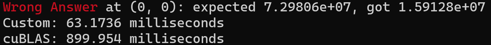

Lab-3 基于CUDA对GEMM的优化
Lab Description
具体描述请见{实验手册}(https://zjusct.pages.zjusct.io/summer-course-2023/HPC101-Labs-2023/Lab3-Cuda/)
通用矩阵乘法（General matrix multiply, GEMM）是 BLAS 中经典的子程序之一。[2] 作为当今科学计算最常见的计算任务之一，GEMM 需要实现一个非常高效的矩阵乘法。优化 GEMM 也是 HPC 界非常基础的任务。
本次实验需要你使用 CUDA 完成一个高性能 GEMM 实现。
Bonus：另外本次实验提供的 GPU 上，包含上述提及的 Tensor Core 模块。合理的使用它能够进一步加速卷积的计算。在 Cuda 9.0 之后，你可以使用内嵌 PTX 汇编或者 CUDA 的 C++ 扩展 nvcuda::wmma 的方式来显式地调用 Tensor Core 来进行计算。
Introduction Knowledge(可以跳过不看)
-
CUDA使用：建议上官网。至于lab中提到的不同API的区别，可见博客
-
Introduction to shared memory.(link)
-
一个Github上不同优化方法的对比
-
CUDA自己对shared memory 的使用的示例3.2.4 GEMM
-
有些知识感觉问gpt获取的速度会更快，但是具体的细节还是在官网上查阅更好（官网的知识介绍非常全）\
Lab Design & Test Result
/// \brief Let A to be A + B.
__global__ void AdderCudaKernel(double *__restrict__ a,
const double *__restrict__ b)
{
// const int i = blockIdx.x * block_size + threadIdx.x;
// const int j = blockIdx.y * block_size + threadIdx.y;
// if (i < size && j < size)
// {
// a(i, j) += b(i, j);
// }
__shared__ double shared_a[block_size][block_size];
__shared__ double shared_b[block_size][block_size];
int i = blockIdx.x * block_size + threadIdx.x;
int j = blockIdx.y * block_size + threadIdx.y;
if (i < size && j < size) {
shared_a[threadIdx.x][threadIdx.y] = a[i * size + j];
shared_b[threadIdx.x][threadIdx.y] = b[i * size + j];
__syncthreads();
shared_a[threadIdx.x][threadIdx.y] += shared_b[threadIdx.x][threadIdx.y];
__syncthreads();
a(i,j) = shared_a[threadIdx.x][threadIdx.y];
}
}
/// \brief Do Matrix Multiplication on GPU.
__global__ void MultipleCudaKernel(const double *__restrict__ a,
const double *__restrict__ b,
double *__restrict__ result)
{
// Get the index of the current thread
const int row = blockIdx.y * blockDim.y + threadIdx.y;
const int col = blockIdx.x * blockDim.x + threadIdx.x;
const int block_num = (size + block_size - 1) / block_size;
// Define shared memory
alignas(32) __shared__ double shared_a[block_size][block_size];
alignas(32) __shared__ double shared_b[block_size][block_size];
// Perform matrix multiplication operation
double sum = 0.0f;
for (int i = 0; i < block_num; i++) {
// Load data from A and B into shared memory
int idx_a = row * size + i * block_size + threadIdx.x;
int idx_b = (i * block_size + threadIdx.y) * size + col;
shared_a[threadIdx.y][threadIdx.x] = (row < size && (i * block_size + threadIdx.x) < size) ? a[idx_a] : 0.0f;
shared_b[threadIdx.y][threadIdx.x] = ((i * block_size + threadIdx.y) < size && col < size) ? b[idx_b] : 0.0f;
// Synchronize to make sure the matrices are loaded before starting the computation
__syncthreads();
#pragma unroll
for (int j = 0; j < block_size; j ++) {
// sum = fma(shared_a[threadIdx.y][j], shared_b[j][threadIdx.x], sum);
// sum = fma(shared_a[threadIdx.y][j + 1], shared_b[j + 1][threadIdx.x], sum);
// sum = fma(shared_a[threadIdx.y][j + 2], shared_b[j + 2][threadIdx.x], sum);
// sum = fma(shared_a[threadIdx.y][j + 3], shared_b[j + 3][threadIdx.x], sum);
sum += shared_a[threadIdx.y][j] * shared_b[j][threadIdx.x];
}
// Synchronize to make sure the computation is done before loading the next sub-matrix
__syncthreads();
}
if(row < size && col < size) {
// Write the result back to result_kernel
result(row, col) = sum;
}
}
Baseline分析：对于baseline而言，其速度慢的原因一方面是只能串行线性进行计算；另一方面在于每次循环都要对主存进行数据的读写。故我们要针对以上的内容进行优化。
优化策略：共享内存，内存对齐，循环展开（编译器会自动实现）、fma等
AdderCudaKernel

第一个是常规的AdderCudaKernel的测试，第二个是使用共享内存的测试时间，由于每次测试具有随机以及不稳定性，针对这种情况我分析可能是__syncthreads()；导致停顿的时间。
Shared Memory
共享内存是测试中加速的主要原因，我们其中使用内存对齐的方式能够有些许加速。
在测试中我们发现共享内存的大小是0xc000,因此我们将blocksize的大小设置为16比较合适。
循环展开
这是一个比较常见的优化手段，但是因为我们使用的是O3优化，以及#pragma unroll,提示编译器，故在我的测试中发现不用自己手写循环展开的优化。
其中fma 值得我们学习，这是CUDA本身自带的一种加速指令。
测试结果


故加速比为0.94818
Discussion
本次lab教会了我如何使用CUDA进行GPU编程，在整个编程过程中，基本阅读了官方文档，并且了解了thread和warp编程思想，以及结合课上的知识，深入理解了内存的内部构造以及NVIDA显卡的自身结构特性，在此基础上进行了优化。
Bonus
关于Bonus，虽然自己没有完整做出来用tensor core的计算方法，但自己也在这个上面投入了比较多的精力，最后根据我的测试应该问题还是出现在了block和grid的数目配置上，因此导致计算结果有误。我的代码如下：
dim3 grid((size + block_size * WMMA_M - 1) / (block_size * WMMA_M),
(size + block_size * WMMA_N - 1) / (block_size * WMMA_N));
dim3 block(block_size, block_size);
const int WMMA_M = 8;
const int WMMA_N = 8;
const int WMMA_K = 4;
/// \brief Do Matrix Multiplication on GPU.
__global__ void MultipleCudaKernel(const double *__restrict__ a,
const double *__restrict__ b,
double *__restrict__ result)
{
// Tile using a 2D grid
const int warpM = (blockIdx.x * blockDim.x + threadIdx.x) / warpSize;
const int warpN = (blockIdx.y * blockDim.y + threadIdx.y);
// Declare the fragments
using namespace nvcuda;
wmma::fragment<wmma::matrix_a, WMMA_M, WMMA_N, WMMA_K, double, wmma::col_major> a_frag;
wmma::fragment<wmma::matrix_b, WMMA_M, WMMA_N, WMMA_K, double, wmma::col_major> b_frag;
wmma::fragment<wmma::accumulator, WMMA_M, WMMA_N, WMMA_K, double> acc_frag;
//initialize
wmma::fill_fragment(acc_frag, 0.0);
// Loop over size
for (int i = 0; i < size; i += WMMA_K) {
int aRow = warpM * WMMA_M;
int aCol = i;
int bRow = i;
int bCol = warpN * WMMA_N;
// Bounds checking
if (aRow < size && aCol < size && bRow < size && bCol < size) {
// Load the inputs
wmma::load_matrix_sync(a_frag, a + aRow + aCol * size, size);
wmma::load_matrix_sync(b_frag, b + bRow + bCol * size, size);
// Perform the matrix multiplication
wmma::mma_sync(acc_frag, a_frag, b_frag, acc_frag);
}
}
int cRow = warpM * WMMA_M;
int cCol = warpN * WMMA_N;
// Store the output
if (cRow < size && cCol < size) {
wmma::store_matrix_sync(result + cRow + cCol * size, acc_frag, size, wmma::mem_col_major);
}
}

结论：通过tensor core的计算，我们能很大程度上避免冲突并且加速计算。通过printf大法我看出我的计算结果与正确的计算结果相差了大约4倍左右，但不太理解自己错在了哪里？如果可以的话希望超算队的学长可以帮忙指出。